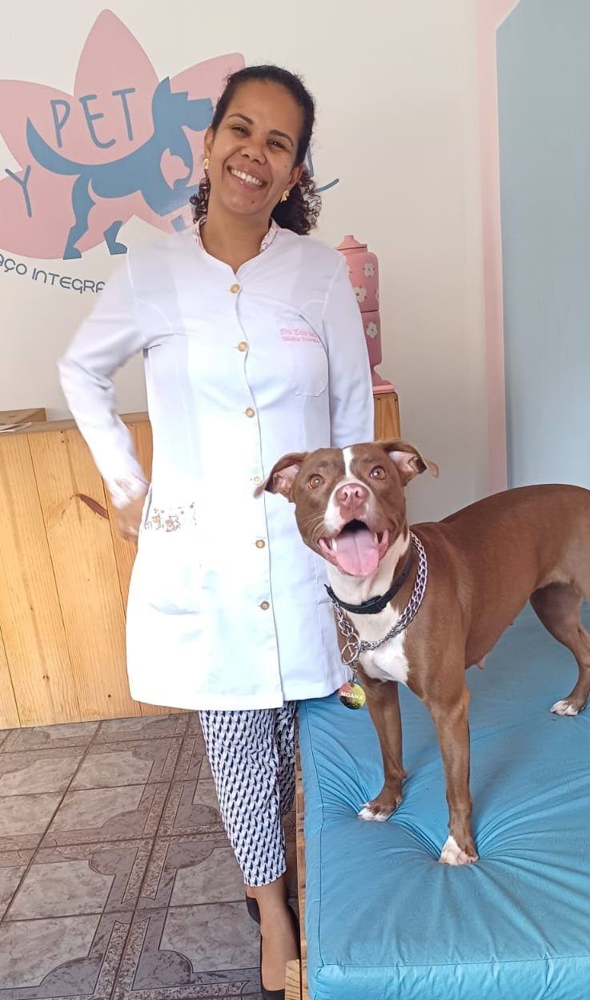
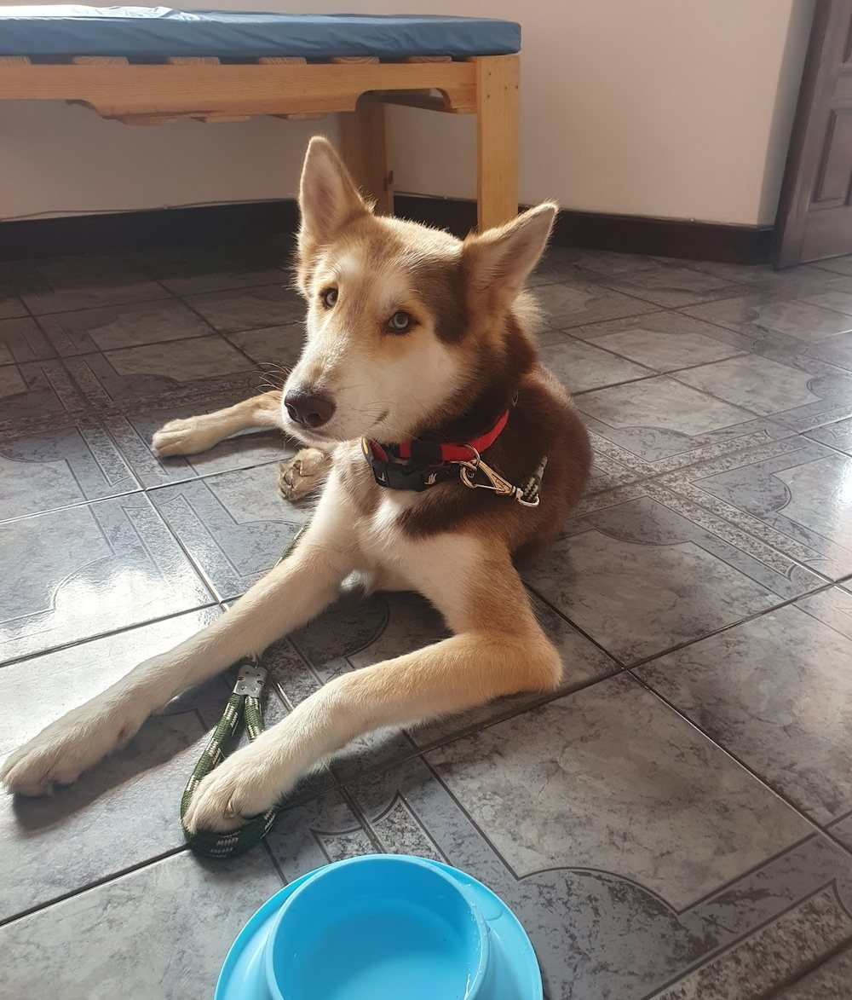

Consultório veterinário · cães e gatos · Narandiba (Cabula)
Cuidado sem pressa para cães e gatos.
A My Pet Zen é o consultório da Dra. Érica da Silva Santos, em Salvador. Um lugar claro e acolhedor, onde o pet é examinado com calma e o tutor sai entendendo o que foi visto.

Por onde começar
O que traz você e o seu pet até aqui?
Cada assunto tem uma página para ler com calma antes do atendimento. A informação é geral; a conduta é definida na consulta, depois do exame do animal.
Quero saber se está tudo bem
A consulta e o check-up de cães e gatos, de filhotes a idosos.
Consultas GatosMeu gato odeia sair de casa
Da caixa de transporte à sala, no tempo dele.
Gatos PrevençãoVacinas, vermes e pulgas
O cuidado de rotina, com protocolo definido na consulta.
Prevenção A veterináriaQuero conhecer a Dra. Érica
Registro, consultório e o que os tutores contam.
SobreO espaço
Claro, colorido e calmo — sem cara de hospital.
“Clinica linda, aconchegante, Zen mesmo.”Ana Paula, avaliação no Google, há 4 anos · ver na ficha
Papel de parede com cães e gatos, mesa branca com tapete macio, a recepção onde os pets se cheiram e se apresentam. As fotos são da ficha da My Pet Zen no Google.
O consultório e como chegar



Para a visita ser tranquila
Um pouco de preparo muda o dia do seu pet.
Orientações gerais de manejo calmo, para cães e para gatos. Cada animal tem o seu jeito: conte como o seu é ao agendar pelo WhatsApp.
Cães
- AntesUm passeio curto antes de sair, para ele chegar mais calmo e já ter feito as necessidades.
- No caminhoGuia e coleira firmes; cães pequenos podem ir na caixa de transporte, com a manta de casa.
- Na salaEle pode cheirar o ambiente antes do exame. Um petisco que ele já conhece ajuda — pergunte antes se pode.
- LeveCarteira de vacinação, exames anteriores e o nome da ração e dos remédios que ele usa.
Gatos
- Dias antesDeixe a caixa de transporte aberta em casa, com uma manta: ela deixa de ser o sinal de “vamos sair”.
- No caminhoCaixa firme, coberta por uma toalha com o cheiro de casa. Um gato por caixa, som baixo.
- Na salaA caixa é aberta e o gato sai quando estiver pronto. Pausas quando ele pedir.
- De voltaUm canto quieto em casa. Se houver outros gatos, reapresente com calma.
Para gatos, há uma página inteira sobre a consulta com menos estresse. Gatos
Trajetória
Do registro no CRMV à My Pet Zen.
Datas conferidas no Siscad do Conselho Federal de Medicina Veterinária, no cadastro da Receita Federal e na ficha do Google. Cada etapa traz a fonte.
- 02/03/2018CRMV-BA 05486
Inscrição da Dra. Érica da Silva Santos como médica-veterinária no CRMV da Bahia.
Fonte: Siscad do CFMV - 23/02/2022My Pet Zen Consultório Veterinário · CRMV-BA 08748
O consultório é registrado no CRMV-BA como pessoa jurídica, em nome da Dra. Érica.
Fonte: Siscad do CFMV - Há 4 anosAs primeiras avaliações
“o ambiente muito acolhedor”, escreve um tutor na ficha do Google.
Fonte: ficha do Google - 14/03/2025MY PET ZEN LTDA
Abertura do CNPJ atual, com a Dra. Érica como sócia-administradora.
Fonte: Receita Federal - 17/10/20265,0 com 31 avaliações
Nota e total da ficha da My Pet Zen no Google.
Fonte: ficha do Google
Na voz dela
“fico muito feliz em poder cuidar”
A Dra. Érica responde às avaliações em primeira pessoa. Três respostas publicadas na ficha do Google:
“Tenho o maior prazer de atender sua filhinha 🥰”Resposta do proprietário · ver na ficha
“Obrigada minha flor, fico muito feliz em poder cuidar da sua filhinha🥰”Resposta do proprietário · ver na ficha
“Obrigada flor🙏”Resposta do proprietário · ver na ficha
Avaliações
5,0 no Google, com 31 avaliações.
Trechos curtos de avaliações públicas da ficha da My Pet Zen, sobre o atendimento. Nomes abreviados.
Minha cachorrinha é acompanhada pela Dra. Érica desde filhote… A Dra. é extremamente atenciosa, amorosa e dedicada
Dra. Érica, é MARAVILHOSA!! Super comprometida, competente, eficiente e prestativa!!
ficamos extremamente confortáveis com a Dra Érica, de uma empatia e acolhimento sem igual.
Atendimento maravilhoso. A vet Erika super humana e o ambiente muito acolhedor.
Clinica linda, aconchegante, Zen mesmo. … A dra. Erica é um amor de pessoa e uma excelente profissional.
Não existem palavras para descrever o quão excelente é a profissional Dra. Érica.
A Dra . Erica além de ter bastante conhecimento é uma médica que vc percebe de longe que ela ama o que faz
Para ler antes
Perguntas que valem uma página.
A My Pet Zen ainda não tem textos publicados; estas páginas trazem informação veterinária geral, escrita para esta prévia e sujeita à revisão da Dra. Érica.
Da conversa ao plano, e o check-up de quem está bem.
Ler a página →GatosO gato que odeia sair de casaCaixa, trajeto e sala: a consulta com menos estresse.
Ler a página →PrevençãoVacinas, vermes e pulgasO que é rotina e por que o protocolo é individual.
Ler a página →ExamesExames: quando e por quêO que pode ser pedido na consulta, em linguagem simples.
Ler a página →A veterináriaQuem é a Dra. ÉricaRegistro, consultório e como os tutores a descrevem.
Ler a página →OndeComo chegar à My Pet ZenR. Silveira Martins, 1016, Narandiba (Cabula).
Ler a página →O consultório
Na Silveira Martins, em Narandiba.
R. Silveira Martins, 1016, no Cabula. Na fachada, procure a placa azul da My Pet Zen no alto do prédio. Veja como chegar.

My Pet Zen · Consultório veterinárioR. Silveira Martins, 1016 · Narandiba (Cabula) · Salvador – BA · 41150-000
Atendimento com hora marcada
Horário da ficha da My Pet Zen no Google, igual ao da placa da fachada (lido em 17/10/2026). Agende pelo WhatsApp e confirme dia e horário.
Dúvidas frequentes
Perguntas comuns
A My Pet Zen atende cães e gatos?
Sim. É um consultório veterinário de cães e gatos, com a Dra. Érica da Silva Santos, médica-veterinária (CRMV-BA 05486).
Onde fica?
Na R. Silveira Martins, 1016, Narandiba (Cabula), Salvador (CEP 41150-000). Veja como chegar e o mapa.
Qual é o horário?
Segunda a sexta, das 8h às 17h; sábado, das 8h às 12h; domingo, fechado — pela ficha do Google e pela placa da fachada.
Como agendo?
Pelo WhatsApp da My Pet Zen, (71) 98739-0603. Diga a espécie, a idade e o motivo do atendimento.
Os exames são feitos no consultório?
A Dra. Érica indica na consulta quais exames fazem sentido. Onde e como cada um é feito, pergunte pelo WhatsApp. Veja exames.
Tem banho e tosa?
A ficha do Google também lista banho e tosa e pet shop, como serviços complementares. Confirme no WhatsApp como funcionam.
Meu gato fica muito nervoso. Vale levar?
Vale, e vale contar isso ao agendar. A página Gatos traz o preparo da caixa e do trajeto.
E fora do horário?
O atendimento é com hora marcada, no horário do consultório. Em urgência fora dele, procure um serviço veterinário de plantão.
Com hora marcada
Um atendimento calmo, para o pet e para você.
R. Silveira Martins, 1016, Narandiba (Cabula). Segunda a sexta, das 8h às 17h; sábado, das 8h às 12h. O agendamento é pelo WhatsApp (71) 98739-0603.